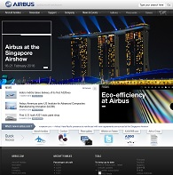

Site web d'Airbus
Pour plus d'information sur l'entreprise Airbus ainsi que leurs avions, consultez leur site officiel.
LES AVIONS
Pour plus d'information sur l'entreprise Airbus ainsi que leurs avions, consultez leur site officiel.
Retrouvez ici, une vidéo montrant un A330, un A350 et un A380 en formation, pour un vol de démonstration.
Ce site vous présente trois avions, (ici trois Airbus):
Airbus produit la famille d’avions la plus moderne et la plus complète du marché, pour laquelle la société assure des services de support du plus haut niveau. Nos centres de production, répartis dans le monde entier, servent de référence à l’ensemble de l’industrie en termes de qualité et d’efficience. Nos employés maintiennent l’esprit pionnier grâce auquel Airbus a été propulsé au rang de leader de l’aviation.
La société contribue à façonner le futur du transport aérien et à favoriser une croissance durable de l’activité dans le monde. Fort de sa compréhension des besoins d’un marché en pleine évolution, Airbus développe des technologies incrémentales novatrices et recherche le plus haut niveau d’efficacité et d’efficience en termes d’approvisionnements et de production, afin de favoriser la croissance des compagnies aériennes et optimiser les connexions. Airbus, dont le siège social se trouve à Toulouse, est aujourd’hui le fer de lance du nouvel « Airbus Group » et obtient régulièrement la moitié de l’ensemble des commandes d’avions civils.
Airbus, qui emploie quelque 55 000 personnes dans le monde, est véritablement une entreprise d’envergure internationale avec des filiales à cent pour cent aux Etats-Unis, en Chine, au Japon, en Inde et au Moyen-Orient, et des centres de rechanges à Hambourg, Francfort, Washington, Pékin, Dubaï et Singapour. Airbus possède aussi des centres d’engineering et de formation à Toulouse, Miami, Wichita Hambourg, Bangalore et Pékin, ainsi qu’un centre d’engineering en Russie et plus de 150 bureaux de représentation auprès des compagnies dans le monde entier. Airbus travaille également en coopération industrielle et partenariat avec de grandes sociétés dans le monde entier, et dispose d’un réseau de quelque 7 700 fournisseurs partout dans le monde.